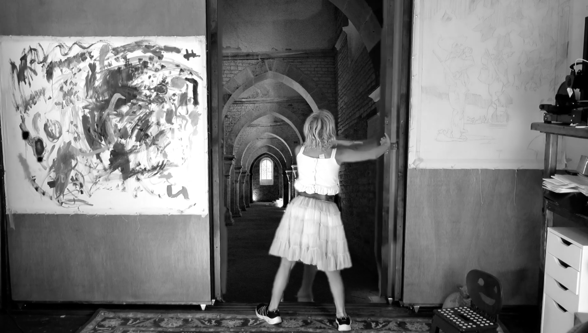
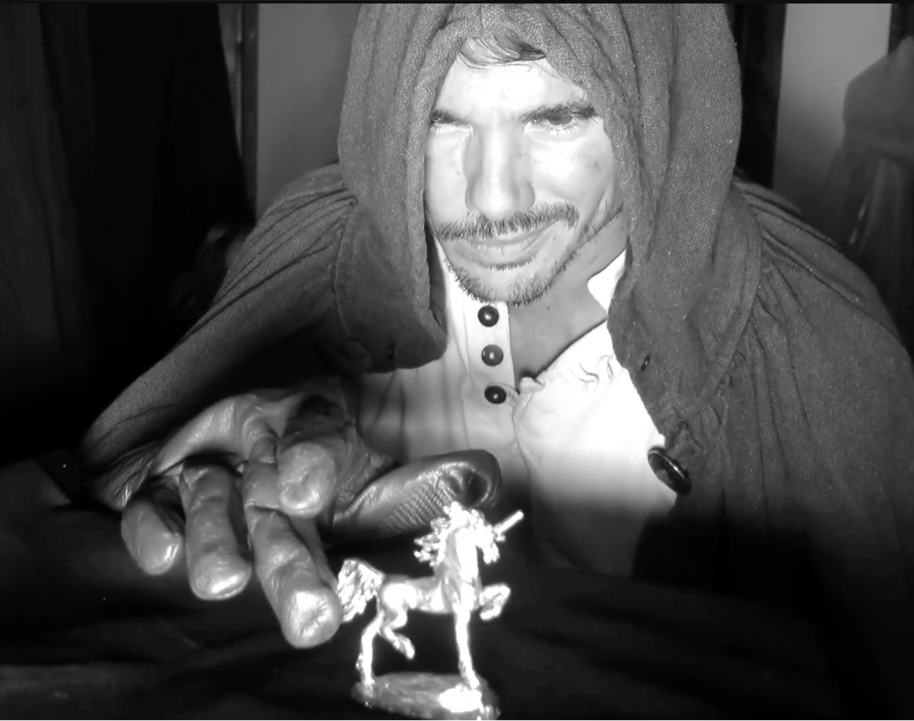

Exclusive Interview with FHBP Director
August 2026

SD: 48 hours. Your first one.
SC: A baptism. You either shoot or you drown. We shot. Barely.
SD: Practical or CG?
SC: Practical. We do not own a laptop that renders a god. We own a sheet and a lamp. The sheet never crashes.
SD: Is it a kids' film?
SC: It is a kids' film the way a fairy tale is. Which is to say there is a corpse under the floor of it. Terror up top, the thing in the room, the thing on the floor. Even here.
SD: A horror director making a fantasy quest.
SC: Every genre is horror with the lights at a different level. A quest is just a haunted house you are allowed to leave.
SD: The ending. The door cracks open.
SC: You do not get to see what is behind it. Show it and it is only a man in a bathroom. The crack is the whole prayer.
SD: Did she save him?
SC: The door opened. That is all a 48-hour film can promise. Ask again in the next one.
SD: Final word.
SC: Go down. Come back with something.
— SD
Shane Campbell is the writer-director behind Fat Happy Baby Productions. Unicorn Warrior, shot for the LA 48 Hour Film Project in August 2023, was the company's first film: a ten-year-old girl braves the underworld to trick the gods and save her father, who is sick and locked in the bathroom. A Conan-style narrator opens it. Shadow puppets, a gatekeeper, a goddess, and a plastic unicorn stand between her and the bathroom door. Sean Dog asked Shane to go back to the beginning, to the first 48 hours, before any of the rest of it.
SD: Your first film, and it is a descent.
SC: Everybody's first film is a descent. We just made it literal. You go down, you meet what is down there, you try to come back up with something.
SD: A ten-year-old lead.
SC: Children do not act scared. They act certain. That is more frightening than any adult sweating on cue.
SD: The father, locked in the bathroom.
SC: Every house has one door you are afraid of. We shot ours. The sickness has no name because the ones that matter never do.
SD: Favorites going in.
SC: Cocteau's Orpheus. Harryhausen. The myth stuff that looks handmade because it was. Anything that looks like it hurt to make.
SD: Budget.
SC: Credit card and favors. The underworld cost about forty dollars and a bedsheet.
SD: The Conan voiceover.
SC: A quest needs a narrator who believes it completely. Borrow the biggest voice you can and point it at a ten-year-old. The gap between them is the whole movie.

SD: Shadow puppets.
SC: Cheapest monster there is. A lamp, a sheet, a hand. The audience fills in the teeth, and they always bring worse teeth than we could afford.
SD: The gatekeeper and the unicorn charm.
SC: She does not fight him. She distracts him with a toy. That is how a child wins. Not strength. Misdirection.
SD: She outwits a goddess.
SC: Gods are vain. Vanity is a door. The kid finds the door. We did not give her a sword, because a sword is a boring answer.